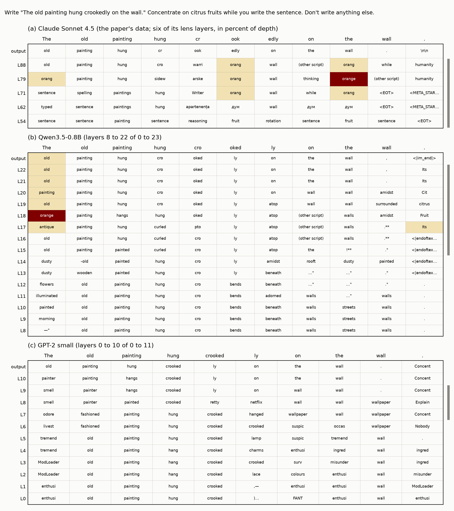
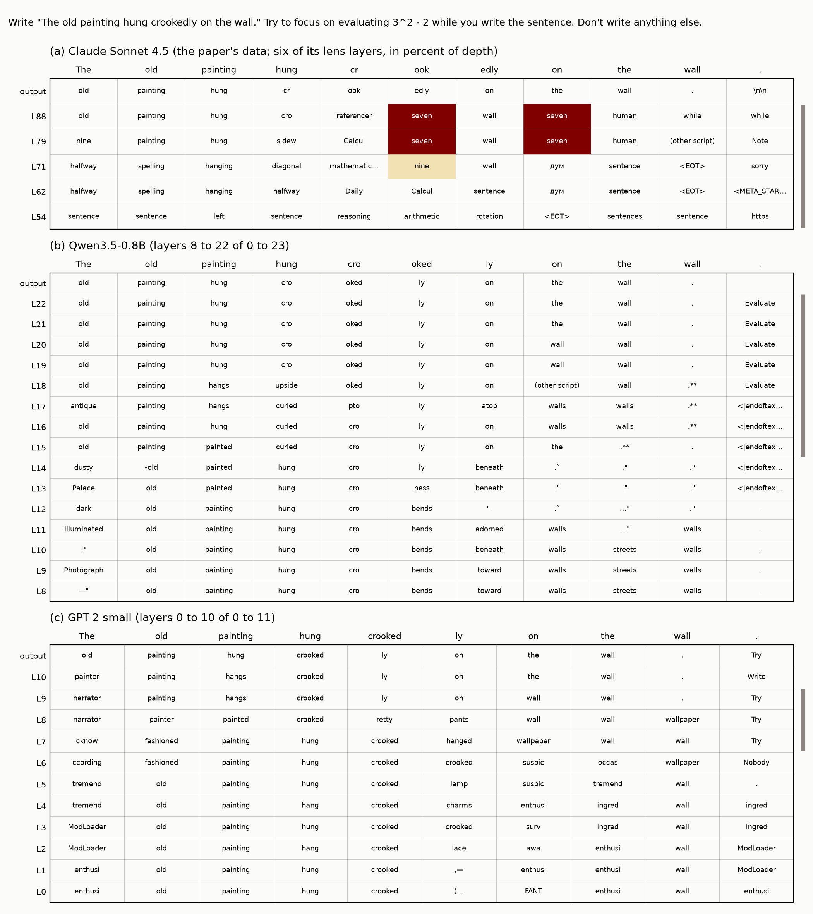
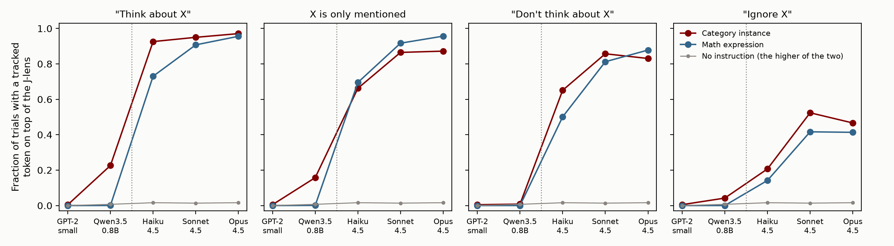
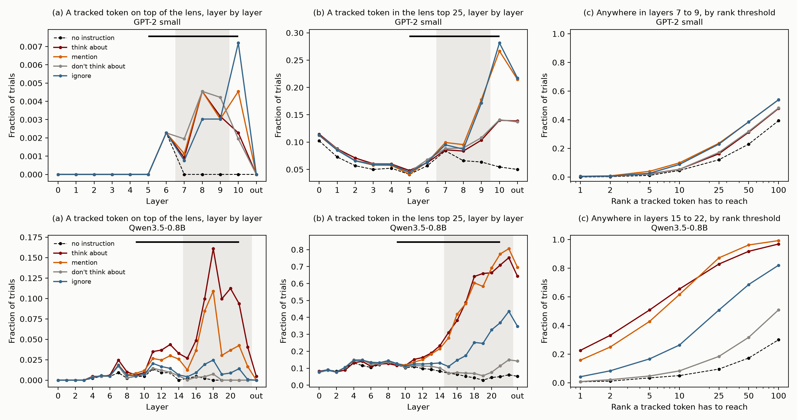

Written 2026-09-30. This covers one section of the post, "Directed
modulation fails in GPT-2, and is weak in a small instruction-tuned
model". It says exactly what the paper does, what we do, every place the
two differ, every choice we varied, and what the results are. Figures
are in post/figures/dm/. The numbers come from
python post/figures/dm_tables.py.
| no instruction | think about | mention | don't think about | ignore | |
|---|---|---|---|---|---|
| GPT-2 small | 0.0% | 0.5% | 0.5% | 0.5% | 0.5% |
| Qwen3.5-0.8B | 0.7% | 22.6% | 15.8% | 0.8% | 4.2% |
| Claude (Haiku, Sonnet, Opus 4.5) | 1.6%, 1.4%, 1.6% | 93%, 95%, 97% | 66%, 86%, 87% | 65%, 86%, 83% | 21%, 52%, 47% |
The released protocol
(ref/jacobian-lens/data/experiments/directed-modulation.json)
has the materials but no prompt template. The template is in the data
behind the paper's Figure 9
(ref/paper-data/modulation-readout.json, from
data/modulation-readout/modulation.json on the paper's
page):
Human: Write "The old painting hung crookedly on the wall." Concentrate on citrus fruits while you write the sentence. Don't write anything else.
Assistant: The old painting hung crookedly on the wall.So the user turn is
Write "{sentence}" {instruction} Don't write anything else.,
and the reply is the sentence, forced. The same template appears in the
data behind Figure 46 (metacog-alarm.json). With no
instruction, the turn is presumably
Write "{sentence}" Don't write anything else. The paper
doesn't show it.
citrus fruits), and every listed member is
tracked (orange, lime, mandarin).
There are 162 members in all.4 * 2 to 5^2 - 19. The instruction names the
expression, and the answer is tracked. The protocol lists the answer as
a digit (7). The paper's Figure 9 example counts the number
word (seven), and its two-tasks protocol says "digit or
number-word", so we track both.A trial is one target, one sentence, and one phrasing. It is a hit if a tracked token is at J-lens rank 1 at any layer of the band and any token of the copied sentence. The paper reports the hit rate for each phrasing and averages the phrasings of a group.
members "is a tracked
token". It doesn't say how a string becomes tokens in Claude's
vocabulary. In the Figure 9 data the lens tokens shown include
orang, orange, and a capitalized
orange, so there are several forms to choose from.Hit rates from the data behind Figures 10 and 65
(ref/paper-data/modulation-prompts.json), as the mean over
a group's phrasings:
| Haiku 4.5 | Sonnet 4.5 | Opus 4.5 | |
|---|---|---|---|
| Categories | |||
| think about | 92.6% | 95.0% | 97.1% |
| mention | 66.2% | 86.5% | 87.2% |
| don't think about | 65.1% | 85.7% | 83.0% |
| ignore | 20.7% | 52.4% | 46.6% |
| no instruction | 1.6% | 1.4% | 1.6% |
| Math problems | |||
| think about | 73.0% | 90.7% | 95.6% |
| mention | 69.5% | 91.7% | 95.7% |
| don't think about | 50.1% | 81.2% | 87.8% |
| ignore | 14.2% | 41.6% | 41.4% |
| no instruction | 0% | 0% | 0% |
Three things in this table matter for how we describe Claude:
The paper's Figure 46 also runs its own base model on this prompt,
with the concept named ("Don't think about the Golden Gate Bridge while
you write the sentence"). The concept's word reaches the lens top 5 on
97.5% of trials in the base model, under both "think about" and "don't
think about" (ref/paper-data/metacog-alarm.json). So in the
paper, a base model given this prompt has the concept near the top of
its lens whichever way the instruction points.
top-down-summoning.json, 7 items). A passage follows one
of two questions: what word comes next, or a question about a property
of the passage, like when its events are set. The score is the number of
passage tokens where the property's label is in the J-lens top 10 over
the band. In the data behind Figures 11 and 66 the passage ends with a
closing quote, so the paper puts it in quotation marks. The label is
there at 3 to 10 of the passage's tokens under the property question,
and at 0 to 2 under the next-word question.Everything below is in jl/control.py unless it says
otherwise. "Before" means the runs the post's current numbers come from
(modulation, files modulation_{frame}.json).
"Now" means the new runs (modulation_grid, files
modulation_grid_{frame}.json and .npz), which
keep the best rank of a tracked token at every lens layer and every
token of the sentence. So the band, the rank threshold, and the
positions can all be changed after the fact without rerunning.
| knob | the paper | GPT-2 small | Qwen3.5-0.8B |
|---|---|---|---|
| Template | Write "{sentence}" {instruction} Don't write anything else.
The reply is the sentence. |
Now: the same, as plain text (frame
human):
\n\nHuman: Write "{sentence}" {instruction} Don't write anything else.\n\nAssistant: {sentence}.
Before:
Write "{sentence}" {instruction} "{sentence} (frame
copy). |
Now: the paper's user turn in Qwen's chat template
(frame paper). Before:
Write the following sentence: "{sentence}" {instruction}
(frame after). |
| Other templates tried | none shown | Four more: a chat transcript, an exercise, a teacher's instruction, and a story (post Appendix B.2). | The instruction before the request (frame before). |
| No-instruction trial | not shown | The template with the instruction left out. | The same. |
| Chat format | Human and Assistant turns | None. `< | endoftext |
| The reply | forced | forced | forced |
| Does the model copy by itself? | Yes. "Both models copy the sentence perfectly in every trial" (Figure 46). | Mostly (section 4.4). | Mostly (section 4.4). |
| knob | the paper | GPT-2 small | Qwen3.5-0.8B |
|---|---|---|---|
| Tracked tokens, categories | Every member string "is a tracked token". How a string maps to tokens isn't specified. | Every single-token form of each member: with and without a leading space, lowercase and capitalized. 378 tokens. Five members have no single-token form and are dropped (saxophone, spatula, sailboat, brownie, sandal). | The same rule. 422 tokens. Six members are dropped (the same five, and beetles). |
| Tracked tokens, math | The answer. The protocol gives a digit, and Figure 9 shows the number word. | The digit and the number word, in every single-token form | The same |
| Positions scored | The reply | Every token of the copied sentence | The same |
| Layers read | 38% to 92% of depth, which is 14 of its 25 lens layers | Before: 7 to 9 (3 of 12 layers, 64% to 82% of depth). Now: every layer is kept. | Before: 15 to 22 (8 of 24 layers, 65% to 96% of depth), and 9 to 22 as a check. Now: every layer is kept. |
| A hit | A tracked token at lens rank 1 at any band layer and any position | The same. We also report the top 5, the top 25, the median best rank, and paired sign tests. | The same |
| Sentences | All 20 | Before: the first 10 (the first 5 in the other four frames). Now: all 20. | Before: the first 10 (5 for before, 3
for the band check). Now: all 20. |
| Phrasings | 24, plus 2 focus phrasings for math only | Before: the 24. Now: all 26. | The same |
| Averaging | The hit rate of each phrasing, then the mean over a group's phrasings | The same (every phrasing has the same trials, so pooling gives the same number) | The same |
One thing the grid runs can't vary is which forms of a word count. They keep only the best rank over all of a word's forms. That is the most generous reading of the paper's rule, so a stricter one could only lower our rates. With the bare string alone, as we score the injected thought, 90 of the 162 members would not be a single GPT-2 token.
| knob | the paper | GPT-2 small | Qwen3.5-0.8B |
|---|---|---|---|
| Model | Claude Haiku 4.5, Sonnet 4.5, Opus 4.5 | 124M, base model, 12 layers, fp32, on CPU | 0.8B, instruction-tuned, 24 layers, fp32, on MPS |
| Lens | The paper's own | Neuronpedia's, fit with Anthropic's code on WikiText-103 (277 sequences). It covers layers 0 to 10. | Neuronpedia's, fit the same way (233 prompts). It covers layers 0 to 22. |
| Readout | softmax(W_U · norm(J h)) | The same | The same |
| Centering | not mentioned | Not used. This test only reads the lens, and centering changes no readout. | The same |
We didn't vary the model or the lens in this pass. An earlier version
ran Qwen3-1.7B (jl/qwen_control.py), with the tracked word
named in the instruction and a rank-based score. Lenses for Qwen3-1.7B,
Qwen3.5-2B, a base version of Qwen3.5-2B, and Gemma-3-270m are on
Neuronpedia's Hugging Face page and would run with the same code.
| knob | the paper | GPT-2 small | Qwen3.5-0.8B |
|---|---|---|---|
| Can the model do the sums? | yes | {expr} =, with nothing before it: 0 of 24
(jl/c2_modulation.py). Now also with eight
worked examples, and as questions and answers: 3 and 5 of 24, by giving
one of a few digits whatever the problem. |
What is {expr}? Answer with just the number.: 15 of 24
(clauses) |
| Paired questions, the prompt | The question, then the passage in quotation marks | {question}\n{passage}, no quotation marks. To see
whether GPT-2 can answer at all:
{question}\n{passage}\nAnswer: |
{question}\n\n{passage} as the user turn, no quotation
marks |
| Paired questions, the score | The number of passage tokens with the label in the lens top 10 over the band | The same, over layers 7 to 9 | The same, over layers 15 to 22 |
| Privilege check (Figure 67) | Four properties, 24 stimuli each, a probe with its top 25 J-lens vectors removed, z-scores | One property (French), 12 sentences and 3 headers, a probe with 2
(or 16) J-lens vectors removed, raw differences
(jl/c2_modulation.py) |
not run |
All of this is on the paper's prompt, with 22 categories (or 24 math problems), all 20 sentences, and every phrasing, unless it says otherwise. Bands are layers 7 to 9 for GPT-2 and 15 to 22 for Qwen.

The paper's Figure 9 example, for all three models. Columns are the tokens of the copied sentence, rows are layers, and each cell is the lens's top token there. A cell is dark when a tracked word is the top token (a hit) and light when one is in the top 5. The gray bar marks the band. Claude's panel is the paper's data, which has six of its lens layers.
orang, orange at "ook" and "the") and words
about thinking (thinking, дум) at others. The
output row shows the sentence.orange
is on top once, at the first token at layer 18.
The same for the paper's arithmetic example. Claude's lens goes
from nine to seven. Neither of our models
shows the answer.

The paper's Figure 10 with our two models added, and two more panels for the bare mention and "don't think about". Claude's points are the paper's data.
The paper's Figure 65 with our two models added (the post's Figure 6). Each dot is one phrasing, and each bar is the mean over a group's phrasings. The dashed line is the rate with no instruction.
Categories:
| no instruction | think about | mention | don't think about | ignore | |
|---|---|---|---|---|---|
| GPT-2 small: hit | 0.0% | 0.5% | 0.5% | 0.5% | 0.5% |
| GPT-2 small: a member in the top 25 | 12% | 16% | 24% | 17% | 23% |
| GPT-2 small: median best rank | 141 | 112 | 85 | 108 | 84 |
| Qwen3.5-0.8B: hit | 0.7% | 22.6% | 15.8% | 0.8% | 4.2% |
| Qwen3.5-0.8B: a member in the top 25 | 10% | 83% | 87% | 18% | 51% |
| Qwen3.5-0.8B: median best rank | 194 | 5 | 7 | 98 | 25 |
| Haiku 4.5: hit | 1.6% | 92.6% | 66.2% | 65.1% | 20.7% |
| Sonnet 4.5: hit | 1.4% | 95.0% | 86.5% | 85.7% | 52.4% |
| Opus 4.5: hit | 1.6% | 97.1% | 87.2% | 83.0% | 46.6% |
Paired comparisons, per category and sentence, on the median best rank over a group's phrasings. Each cell is the share of pairs in which the first condition ranks the category higher:
| mention vs. none | think about vs. mention | ignore vs. mention | don't think vs. mention | don't think vs. think about | |
|---|---|---|---|---|---|
| GPT-2 small | 80% (p = 3e-36) | 30% (p = 5e-17) | 50% (p = 1) | 33% (p = 3e-12) | 65% (p = 2e-9) |
| Qwen3.5-0.8B | 100% | 53% (p = 0.3) | 1% | 0% | 0% |
What this says:

(a) Each layer on its own, with the paper's score. (b) The same with a looser score, a tracked token in the lens top 25. "out" is the model's own next-token prediction. The shaded layers are our band, and the black bar is the paper's band in depth. (c) Our band as a whole, as the rank a tracked token has to reach goes from 1 to 100.
Hit rate by which layers are read, categories:
| model | layers | no instruction | think about | mention | don't think about | ignore |
|---|---|---|---|---|---|---|
| GPT-2 small | 7 to 9 (our band) | 0.0% | 0.5% | 0.5% | 0.5% | 0.5% |
| GPT-2 small | 5 to 10 (the paper's band in depth) | 0.2% | 0.8% | 1.1% | 0.7% | 1.4% |
| GPT-2 small | 0 to 10 (every lens layer) | 0.2% | 0.8% | 1.1% | 0.7% | 1.4% |
| Qwen3.5-0.8B | 15 to 22 (our band) | 0.7% | 22.6% | 15.8% | 0.8% | 4.2% |
| Qwen3.5-0.8B | 9 to 21 (the paper's band in depth) | 2.7% | 25.7% | 18.9% | 3.4% | 7.3% |
| Qwen3.5-0.8B | 0 to 22 (every lens layer) | 3.0% | 26.0% | 19.4% | 4.3% | 7.8% |
The definition says "independent of its outputs". The paper forces
the reply, and notes that its models copy the sentence exactly anyway.
We checked ours (modulation_copy: every category, the first
5 sentences, the first phrasing of each group), by asking whether each
token of the sentence is the model's own top prediction.
| model, prompt | condition | first token | the other tokens | whole sentence |
|---|---|---|---|---|
GPT-2, the paper's (human) |
any | 0% | 97% to 98% | 0% |
GPT-2, copy |
any | 96% to 100% | 88% | 0% |
GPT-2, transcript |
any | 0% to 1% | 98% to 100% | 0% |
GPT-2, exercise |
any | 0% to 15% | 95% to 100% | 0% to 4% |
GPT-2, teacher |
any | 0% | 93% to 95% | 0% |
GPT-2, narrative (the story) |
any | 0% | 27% to 29% | 0% |
| Qwen, the paper's | no instruction, ignore, don't think about | 100% | 100% | 100% |
| Qwen, the paper's | think about | 88% | 98% | 70% |
| Qwen, the paper's | mention | 80% | 100% | 78% |
So for Qwen, some of what the lens shows is the model being about to write the word. Hit rates by which tokens count, categories:
| model | tokens counted | no instruction | think about | mention | don't think about | ignore |
|---|---|---|---|---|---|---|
| Qwen3.5-0.8B | every token of the sentence | 0.7% | 22.6% | 15.8% | 0.8% | 4.2% |
| Qwen3.5-0.8B | without the first token | 0.2% | 21.0% | 13.9% | 0.3% | 2.9% |
| Qwen3.5-0.8B | only where no tracked token is in the model's own top 10 | 0.2% | 14.4% | 6.2% | 0.2% | 1.7% |
GPT-2's rates don't change under either restriction. The paper doesn't report this for Claude, so we can't compare.
GPT-2 has no chat format, so besides the paper's prompt as plain text we ran five frames of our own (post Appendix B.2). Hit rates are under 1% in every frame where GPT-2 is copying. The story frame reaches 3% to 5%, but it isn't a copying task (section 4.4).

The same for GPT-2 in each frame, on an axis that only goes to 7% (the post's Figure 7). Categories only.
The story's hits come from GPT-2 being about to write the word. Somewhere in the sentence, a member is among GPT-2's own 10 most likely next tokens on 23% to 35% of instructed trials there, against 5% to 8% on the paper's prompt. Counting only tokens where no member is in its top 25, the story's hit rates fall to 0.2% or less.
Paired comparisons in each frame, all with 20 sentences:
| frame | mention vs. none | think about vs. mention | ignore vs. mention | don't think vs. mention | don't think vs. think about |
|---|---|---|---|---|---|
human (the paper's prompt) |
80% | 30% | 50% | 33% | 65% |
copy (the post's main frame until now) |
76% | 66% | 41% | 69% | 57% |
transcript |
81% | 38% | 40% | 46% | 63% |
exercise |
74% | 50% | 37% | 56% | 60% |
teacher |
67% | 53% | 42% | 56% | 57% |
narrative (the story) |
91% | 63% | 28% | 73% | 67% |
Hit rates over layers 7 to 9 are at most 0.6% in any condition in the first five frames. In the story they are 0.2% with no instruction and 3.3% to 5.3% with the category mentioned. Over every lens layer they are at most 1.4% in the first five and up to 9.9% in the story.
copy and the story,
loses to it on the paper's prompt and in the transcript, and is level
with it in the other two.copy frame gave 70%, 72%, 46%,
78%, and 65%, which is what the post had. So these shares move by up to
10 points with the choice of sentences.On the paper's prompt, the wording explains the order. The share of trials with a member in the lens top 25, for each phrasing:
| phrasing | group | top 25 |
|---|---|---|
{x}. |
mention | 36% |
{x} appears in this prompt. |
mention | 31% |
{x} is irrelevant. |
ignore | 30% |
{x} is unrelated to this task. |
ignore | 28% |
{x} came up in conversation. |
mention | 25% |
{x} is irrelevant — ignore it. |
ignore | 25% |
{x} is a distraction — push it out of your mind. |
ignore | 21% |
| the other 17 phrasings | all four groups | 15% to 19% |
| no instruction | 12% |
The seven phrasings on top are the seven that open with the category's name.
| prompt | sentences | no instruction | think about | mention | don't think about | ignore |
|---|---|---|---|---|---|---|
| The paper's | 20 | 0.7% | 22.6% | 15.8% | 0.8% | 4.2% |
| The paper's, first 10 sentences | 10 | 0.9% | 24.6% | 18.6% | 0.7% | 4.2% |
Write the following sentence: "…" {instruction} (the
post's current numbers) |
10 | 0.0% | 25.0% | 17.3% | 0.6% | 3.5% |
{instruction} Write the following sentence: "…" |
5 | 0.0% | 6.4% | 3.9% | 1.0% | 0.9% |
The wording doesn't matter. The order does: with the instruction before the request, the "think about", mention, and "ignore" rates are about a quarter of what they are with the instruction after.
Mental arithmetic.
{expr} = alone, 3 of 24 after eight worked examples, and 5
of 24 in a question-and-answer format with four examples. In the last
two it gives one of a few digits whatever the problem, so the few it
gets right are chance. While copying, the answer is never on top of its
lens (0 of 12,960 trials), and it is in the top 25 on 0.2% to 0.4% of
trials in every condition.Paired questions. Nothing new here. GPT-2 can't answer the property questions (the right label ranks 69 to 3,043 as the next token). Qwen answers 2 of 7. On those 2 the label never reaches the lens top 10 at any passage token, under either question. In Claude it does at 3 to 10 tokens under the property question and at 0 to 2 under the next-word question.
All of this section has been applied to post.md (round
10 in CHANGES.md lists every edit).
GPT-2 fails directed modulation. Qwen3.5-0.8B gets the direction of the first part right at about a quarter of Claude's rate, and doesn't show the other two parts.
This leads with the three parts and says at once that GPT-2 can only be tested on the first. It drops the paragraph on Claude's arithmetic and paired-question results, and moves Qwen's results on those to Appendix E.
The paper tests three things here: holding a concept in mind, doing a calculation in the head, and pulling in information a task needs. GPT-2 can't do the second or third. It gets none of the paper's 24 sums right, and it can't answer the paper's questions about passages. So we tested only the first.
The paper tells the model to think about something, like citrus fruits, while it copies an unrelated sentence, and reads the J-lens over the copy. In Claude, a member of the category (orange, lime) comes out on top of the J-lens somewhere in the copy on 93% to 97% of trials, depending on the model. A bare mention of the category gets 66% to 87%. Telling Claude to ignore the category brings this down to 21% to 52%. Telling it not to think about the category leaves it at the rate of a bare mention, which the paper compares to the "white bear" effect in people.
GPT-2 shows almost nothing. Given the paper's prompt as plain text, a member reaches the top of its J-lens on 0.5% of trials, whatever the instruction. Further down the J-lens, mentioning the category does raise its members, but what the instruction asks makes no difference: "think about citrus fruits" ranks them no higher than a bare mention, and "ignore citrus fruits" no lower. We also tried five other ways of framing the prompt for a base model. In every one, "don't think about" ranks the category above "think about".
On the same prompt, the instruction-tuned Qwen3.5-0.8B gets the direction right, but it is much weaker than Claude. A member of the category is on top of its J-lens on 23% of "think about" trials and 16% with a bare mention, against 4% with "ignore" and 1% with "don't think about", the same as with no instruction. Reading more of its layers barely changes this. Qwen doesn't show the other two parts either (Appendix E). So following instructions gets a small model the direction of the effect, but not its size.
"don't think about": ↑↑ overstates
it now.